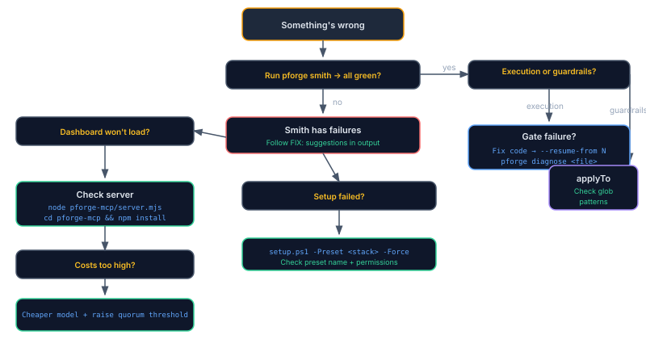

Troubleshooting
"Something's wrong." Find the answer fast.
Every tool breaks eventually. The question is whether you have a diagnostic path or just a prayer. Start with pforge smith, it catches 80% of issues in 5 seconds.
Diagnostic Tools

| Tool | What It Checks | When to Use |
|---|---|---|
pforge smith | Environment, VS Code config, setup health, version | First thing when anything seems off |
pforge check | Setup file existence and validity | After setup or update |
forge_diagnose({ file }) (MCP tool) | Multi-model bug investigation on a specific file | When a slice fails and you can't see why, invoke from Copilot Chat |
What a healthy pforge smith looks like
If you've never run it, here's the shape of the output to compare against. Anything red or marked FAIL is a real problem; WARN usually means an optional extension or integration isn't installed.
$ pforge smith
Plan Forge v3.5.1, forge diagnostic
Environment
OS Windows 10.0.22631 OK
Shell PowerShell 7.4.1 OK
Node v20.11.0 OK (≥ 18 required)
Git 2.42.0 OK (≥ 2.30 required)
Forge layout
.github/prompts 11 files OK
.github/instructions 17 files OK
.github/agents 19 files OK
.github/hooks 4 files OK
.github/skills 11 files OK
docs/plans 3 files OK
.forge/config.json present OK
MCP server
pforge-mcp/server.mjs present OK
Port 3100 free OK
Port 3101 (WS hub) free OK
Agent adapters
copilot .vscode/mcp.json OK
claude .mcp.json not installed WARN (run setup with --agent claude)
cursor .cursor/mcp.json not installed WARN
codex .codex/mcp.json not installed WARN
Result: 4 OK, 3 WARN, 0 FAIL , forge is healthyResult: line is the headline. If FAIL = 0 you're fine to keep working. WARNs are reminders, not blockers.
Agent Isn't Following Guardrails
| Symptom | Cause | Fix |
|---|---|---|
| AI ignores coding standards | Instruction files not loading | Check applyTo pattern matches the file you're editing. Run pforge smith to verify file counts. |
| Wrong instructions loading | applyTo glob too broad | Narrow the pattern, use **/auth/** instead of ** |
| Guardrails load but AI ignores them | Context budget exceeded | Reduce copilot-instructions.md to <80 lines. Remove applyTo: '**' from non-essential files. |
| Project Principles not enforced | PROJECT-PRINCIPLES.md missing | Run the project-principles prompt. The instruction file activates only when this file exists. |
Plan Execution Fails
| Symptom | Cause | Fix |
|---|---|---|
| Gate fails with build errors | Code doesn't compile | Fix the build error, then pforge run-plan --resume-from N |
| Gate fails, tests regress | New code broke existing tests | Fix the regression. Check if scope contract is too broad. |
| Slice times out | Context window exhausted or model overloaded | Split the slice into smaller chunks. Try a different --model. |
| Model returns error | API key invalid or rate limited | Check XAI_API_KEY / OPENAI_API_KEY env vars. Wait for rate limit reset. |
| Scope violation detected | AI touched forbidden files | The PreToolUse hook should catch this. If not, tighten the Scope Contract. |
| Escalation exhausted | All models in chain failed | Review the slice, it may be too complex. Break into sub-slices or simplify gates. |
Dashboard Won't Load
| Symptom | Cause | Fix |
|---|---|---|
| Connection refused on :3100 | Server not running | node pforge-mcp/server.mjs |
| Port already in use | Another process on 3100 | node pforge-mcp/server.mjs --port 4100 or kill the conflicting process |
| Blank page loads | Missing node_modules | cd pforge-mcp && npm install |
| WebSocket disconnects | Firewall or proxy blocking :3101 | Allow port 3101, or set WS_PORT env var |
| No data in Runs/Cost tabs | No execution history yet | Run a plan first: pforge run-plan |
Setup Failed
| Symptom | Cause | Fix |
|---|---|---|
| "Preset not found" | Typo in preset name | Valid presets: dotnet, typescript, python, java, go, swift, rust, php, azure-iac |
| Permission denied | Read-only directory or no git access | Check file permissions. Run from a writable directory. |
| Existing files conflict | Previous setup exists | Use -Force flag to overwrite, or pforge update for selective updates |
| Wrong files installed | Incorrect preset for your stack | Re-run: .\setup.ps1 -Preset <correct-preset> -Force |
Costs Are Too High
| Strategy | Savings | How |
|---|---|---|
| Use cheaper execution model | 50–70% | Set modelRouting.execute to a smaller model |
| Reserve expensive model for review | 30–50% | modelRouting.review: "claude-opus-4.6" |
| Raise quorum threshold | 20–40% | --quorum-threshold 8 (fewer slices trigger consensus, see scoring rubric) |
| Reduce context per slice | 10–20% | Use targeted Context: lists (see Chapter 4) |
| Preview before running | N/A | pforge run-plan --estimate or forge_estimate_quorum (compares all four modes) |
Grok Image Generation Crashes Session
xAI Grok Aurora returns JPEG bytes regardless of requested format. If raw bytes with wrong MIME type enter the conversation history, the session becomes unrecoverable.
generateImage() function detects actual format via magic bytes and converts using sharp. Sessions should be safe, but if you encounter the MIME mismatch error, start a fresh session.
Safe workflow: Use .jpg extensions (matches Grok's native output), generate art in dedicated sessions, or use the REST API: POST /api/image/generate.
Common Error Messages
| Error | Cause | Fix |
|---|---|---|
No .forge.json found | Not in a Plan Forge project | Run pforge init or setup.ps1 |
templateVersion mismatch | Framework files outdated | pforge update |
No API key configured | Missing env var for image/analysis | Set XAI_API_KEY or OPENAI_API_KEY |
Plan parsing failed | Malformed plan file | Check for missing ## Execution Slices section or broken markdown |
Gate command failed (exit 1) | Build or test failure | Fix the code, then --resume-from N |
DRIFT DETECTED | Forbidden file modified | Revert the forbidden change, re-run the slice |
CRITICAL_FIELDS_MISSING v2.82.1 | Crucible finalize blocked, missing build-command, test-command, scope, gates, forbidden-actions, or rollback | Call forge_crucible_preview for criticalGaps[], then continue the interview |
PLAN_ALREADY_EXISTS v2.82.1 | Crucible finalize refuses to overwrite hand-authored docs/plans/Phase-NN.md | Read both files (existing plan + .crucible-draft.md), then re-finalize with overwrite: true if you really mean it |
ASK_QUESTION_MISMATCH v2.82.1 | Client passed a stale questionId to forge_crucible_ask | Re-fetch state via forge_crucible_preview, retry with the current question id |
QUORUM_ALL_FAILED v2.78 | All quorum models timed out (60s each) or errored | Check API keys / network; retry. Consider --quorum=speed if flagship models are unavailable. Multi-agent quorum reference. |
NO_REASONING_MODEL | Forge-Master has no model configured and no API key found | gh auth login for zero-key path, or set ANTHROPIC_API_KEY / OPENAI_API_KEY / XAI_API_KEY, or set forgeMaster.reasoningModel |
Subprocess STATUS_CONTROL_C_EXIT (0xC000013A) v2.81 | Worker process was killed by signal mid-slice | Slice is now correctly marked failed (not silently passed). Check statusReason, then --resume-from N |
slice-orphan-warning event v2.82.1 | Failed slice's worker deliverables were staged but not committed | See .forge/runs/<runId>/orphans-slice-<N>.json for copy-paste recovery commands |
Crucible Finalize Fails v2.82.1+
The Crucible critical-fields gate refuses to draft TBD-laden plans. If finalize keeps returning CRITICAL_FIELDS_MISSING, the recovery path is:
forge_crucible_preview { id }, returnscriticalGaps: [{ field, reason, hint }, …]- For each gap, the next call to
forge_crucible_askqueues a question that targets that field - Build/test command questions auto-fill suggestions via
inferRepoCommands, usually you just confirm - Once all gaps resolved, finalize succeeds
If the gate is blocking on something you genuinely don't need (rare, the gate exists for good reason), the escape hatch is --manual-import on a hand-authored plan. See Chapter 5 — Enforcement Gate.
Forge-Master Misroutes Intent
Forge-Master classifies prompts into operational, troubleshoot, build, advisory, or offtopic. Misroutes happen most often when:
- Stage 1 keyword scorer didn't match, check the
viafield in the response. If"keyword", try a more keyword-rich phrasing ("status of …", "why did … fail", "should we …") - Embedding cache is cold, new project, no prior classifications. Hit rate climbs after 10–20 turns. Check
GET /api/forge-master/cache-stats - Router model is too small, default
grok-3-miniis fine for most prompts but quirky vocabulary may needgrok-4orgpt-4o-mini. Override viaforgeMaster.routerModelin.forge.json - Quorum advisory not firing on
"auto", requires lane=advisory + autoEscalated=true + fromTier=high + confidence≥medium. Use"always"to remove gating during testing
See Forge-Master chapter — Troubleshooting for the full list.
Host-Aware Routing Confusion v2.82+
Host-aware routing detects which IDE / CLI host you're running Plan Forge from (VS Code + Copilot, Claude Code, Cursor, Windsurf, Zed, bare terminal) so you don't silently double-pay against your non-Copilot subscription when calling gpt-* models. If you're seeing surprising routing behavior:
| Symptom | What's happening | Override |
|---|---|---|
"My gpt-* calls cost more on Claude Code than VS Code" | Default auto mode prefers direct OpenAI API on non-Copilot hosts (honors your subscription) | Set routing.hostPreference: "gh-copilot" in .forge.json to force Copilot subscription billing |
"Quorum dropped gpt-* from the run" | You're on a non-Copilot host AND OPENAI_API_KEY is unset AND routing.hostPreference is "drop" | Set the API key, or change preference to "auto" / "gh-copilot" |
| "Quorum pre-run summary table shows different billing per model" | Working as intended, the new table shows host + per-model billing surface so you can see spend distribution before dispatch | None, this is a feature, not a bug |
Errors & Exit Codes
If a script needs to react to a Plan Forge failure programmatically, branch on the exit code (CLI / orchestrator) or the named error code (MCP tools / REST). These are stable across releases, new failure modes get new codes rather than reusing existing ones.
| Layer | Returns | Branch on |
|---|---|---|
pforge CLI | POSIX exit code | 0 success · 1 generic failure · 2 environment refusal (not in git repo, update-check failed, audit had no scanners) |
pforge run-plan | Exit code + statusReason in JSON | 0=completed / completed-with-warnings · 1=failed / aborted. statusReason narrows it: gate-failed, drift-detected, quorum-all-failed, etc. |
MCP tools (forge_*) | { ok, code, error } envelope | ok: false with a named code, e.g. NO_API_KEY, CRITICAL_FIELDS_MISSING, QUORUM_ALL_FAILED, PLAN_NOT_FOUND |
REST (POST /api/…) | HTTP status + JSON body | 400 bad body · 404 missing · 409 state conflict (ERR_UPDATE_DURING_RUN) · 429 rate limited (use retryAfterMs) · 500 internal |
| OS subprocess (worker, gate) | Native exit code, surfaced via statusReason | 0xC000013A Windows Ctrl+C · 130/137/143 POSIX signals. Mapped to worker-signaled. |
Getting Help
- GitHub Issues: github.com/srnichols/plan-forge/issues
- Contributing: View contributing guide on GitHub for PR guidelines
- Security: View security policy on GitHub for vulnerability reporting
📄 Full reference: FAQ, Multi-Agent Setup — GitHub Copilot